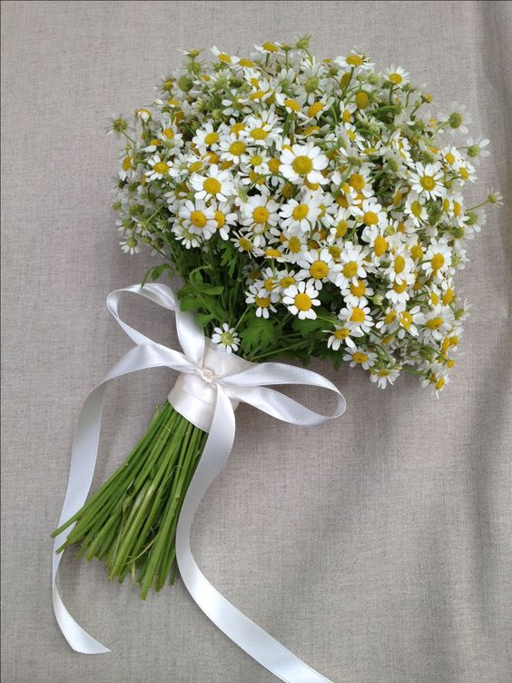

<!DOCTYPE html>
<html lang="en">
<head>
    <meta charset="utf-8">
    <meta name="viewport" content="width=device-width, initial-scale=1">
    <link href="https://cdn.jsdelivr.net/npm/bootstrap@5.3.3/dist/css/bootstrap.min.css" rel="stylesheet">
    <link href="https://getbootstrap.com/docs/5.3/assets/css/docs.css" rel="stylesheet">
    <title>QQ d' Bloom Florist</title>
    <script src="https://cdn.jsdelivr.net/npm/bootstrap@5.3.3/dist/js/bootstrap.bundle.min.js"></script>
    <link rel="stylesheet" href="styles.css" />
    <link rel="stylesheet" href="https://code.jquery.com/ui/1.13.3/themes/base/jquery-ui.css">
    <link rel="stylesheet" href="/resources/demos/style.css">
    <script src="script.js"></script>
    <script src="https://code.jquery.com/jquery-3.7.1.js"></script>
    <script src="https://code.jquery.com/ui/1.13.3/jquery-ui.js"></script>

<script>
<!--autocomplete function-->
     $( function() {
      var availableTags = [
        "Baby's Breath",
        "Carnations",
        "Daisy",
        "Gysophila",
        "Peony",
        "Rose",
        "Sunflower",
        "Tulips"
      ];
      $( "#tags" ).autocomplete({
        source: availableTags
      });
    } );
</script>
    
</head>
    
<body>
    <!--navigation bar-->
    <nav class="navbar navbar-expand-lg navbar-dark custom-navbar">
        <div class="container-fluid">
            <a class="navbar-brand" href="#">QQ d' Bloom Florist</a>
            
            <button class="navbar-toggler" type="button" data-bs-toggle="collapse" data-bs-target="#navbarSupportedContent" aria-controls="navbarSupportedContent" aria-expanded="false" aria-label="Toggle navigation">
                <span class="navbar-toggler-icon"></span>
            </button>
            
            <div class="collapse navbar-collapse" id="navbarSupportedContent">
                <ul class="navbar-nav me-auto mb-2 mb-lg-0">
                    <li class="nav-item">
                        <a class="nav-link " href="index.html">Home</a>
                    </li>
                    
                    <li class="nav-item">
                        <a class="nav-link"  href="about.html">About Us</a>
                    </li>
           
                    <li class="nav-item dropdown">
                        <a class="nav-link dropdown-toggle active"  aria-current="page"   href="#" role="button" data-bs-toggle="dropdown" aria-expanded="false">Services</a>
                        <ul class="dropdown-menu">
                            <li><a class="dropdown-item" href="buy.html">Ready-made bouquet</a></li>
                            <li><a class="dropdown-item" href="custome.html">Custome</a></li>
                            <li><hr class="dropdown-divider"></li>
                            <li><a class="dropdown-item" href="#">Know Your Flowers</a></li>
                        </ul>
                    </li>
            
                    <li class="nav-item">
                        <a class="nav-link" href="contact.html">Contact</a>
                    </li>
                </ul>
                
                <!--search bar-->
                <form id="search-form" class="d-flex" role="search" action="info.html" method="GET">
                    <input id="tags" name="query" class="form-control me-2" type="search" placeholder="Search" aria-label="Search">
                    <button id="search" class="btn btn-outline-success" type="submit">Search</button>
                </form>
            </div>
        </div>
    </nav>
    
    <!--navigation for index-->      
    <div class="row">
        <div class="col-4">
                <nav id="navbar-example3" class="h-100 flex-column align-items-stretch pe-4 border-end">
                    <nav class="nav nav-pills flex-column">
                        
                        <a class="nav-link" href="#BabyBreath">Baby's Breath</a>
                    
                        <a class="nav-link" href="#Carnations">Carnations</a>
            
                        <a class="nav-link" href="#Daisy">Daisy</a>
            
                        <a class="nav-link" href="#peony">Peony</a>
            
                        <a class="nav-link" href="#Roses">Roses</a>
                        
                         <a class="nav-link" href="#sunflower">Sunflower</a>
                        
                        <a class="nav-link" href="#Tulips">Tulips</a>
            
              
                    </nav>
                </nav>
        </div>
    
            <div class="col-8">
                    <div data-bs-spy="scroll" data-bs-target="#navbar-example3" data-bs-smooth-scroll="true" class="scrollspy-example-2" tabindex="0">
                        <!--baby's Breath section-->
                        <div id="BabyBreath">
                            <h4>Baby's Breath ( Gypsophila )</h4>
                            <p>Buying the baby's breath flower often represents sincerity, purity, and love in many forms. It also sometimes symbolizes innocence, making it an excellent gift for baby showers and many other occasions.
                               When given as a gift, they are given as one of thoughtfulness and love. <br><br>They are often given to someone who is sick or experiencing a loss. They also give a meaning of being needed or wanted.
                               Giving a baby's breath flowers to someone is an act that is as old as time itself.  It is a flower that<b> lets the woman know that she is a special person and loved</b>. It is a gift that will make anyone feel loved and cherished.
                               If you are looking for white or pink fluffy flowers, add pieces of baby's breath to your bouquet.</p>
                              
                              
                        </div>

                        <div id="BBColor">
                             <h5>Let the Gypsophila talks</h5>

                              <p>Some of our favorite Baby's Breath colour symbolisms? 
                                  <br><br>White Baby Breath flower means unity and spirituality while blue symbolizes honesty and respect.
                                  <br>Orange blooms symbolize joy and optimism while red Baby Breath flowers - obviously - signifies love and romance. 
                                  <br>Pink ones are meant to express gentleness and emotions while purple conveys royalty and beauty. 
                                  <br>Yellow Baby's Breath flower offer a gift of joy, cheerfulness and a ray of sunshine - our absolute favorite!</p>
                        </div>
                        <!--carnations section-->
                        <div id="Carnations">
                            <h4>Carnations</h4>
                            <p>With a fascinating history that spans across 2,000 years, carnations are full of meaning and symbolism! <br><br>
                                These gorgeously fluffy blooms have stood the test the time and are still a favourite flower for many occasions like weddings and birthdays.
                                Their light, sweet scent and huge range of colours make the carnation flower a delight for all the senses. 
                                Keep reading to find out more about the ever-popular carnation and its different colour meanings.
                                <br> As carnations have been around for quite some time, they've been associated with many different symbolic meanings in different cultures. 
                                Generally though, carnations symbolise:<b> Devotion, Love, Distinction,
                                Fascination</b></p>
                                
                                  
                        </div>

                        <div id="CarnationsColor">
                             <h5>Words in Carnations</h5>

                              <p>Some of our favorite Carnations colour symbolisms? 
                                  <br><br>Pink carnations mean gratitude.
                                  <br>White carnations mean purity and good luck.
                                  <br> Red carnations mean love and affection.
                                  <br>Yellow carnations mean disappointment and rejection.
                                  <br>Purple carnations mean capriciousness.
                                  <br>Orange carnations mean desire.
                                  <br>Blue carnations mean mystery.</p>
                        </div>
                        <!--daisies section-->
                         <div id="Daisy">
                            <h4>Daisy</h4>
                            <p>In the Old English language, daisies actually used to be called "day's eye". 
                                This is because the petals would close over its yellow centre at night and re-open during the day. 
                                Ever heard the term - fresh as a daisy? Well, this is where it came from, as it meant someone had a good nights sleep.<br><br>
                                Because daisies have been around for so long - and there are hundreds and hundreds of species - they have a lot of meanings. 
                                But, the most common ones are:<b> Innocence and purity, New beginnings, True love!</b></p>
                                
                                  
                        </div>

                        <div id="DaisyColor">
                             <h5>Speak through the Daisies</h5>

                              Examples of common meanings of different colors are:<br>
                                Pink - gentleness, love and romance. <br>
                                Blue - long-term loyalty and trust so you can 
                                send them to a friend, a long-term partner or a family 
                                member who you care very much for.<br>
                                Orange - happiness, joy, friendship and warmth.<br>
                                White - purity and innocence with their bright and fresh appearance. 
                                White daises can be included in <b>wedding flowers or wedding decor</b>, 
                                which will look amazing for a spring wedding! <br>
                                Yellow -  joy, optimism and friendship. They are often considered a representation of 
                                cheerfulness and positivity. <br>
                                
                        </div>
                        
                        <!--peony section-->
                        <div id="peony">
                            <h4>Peony</h4>
                            <p>More than simply looking fabulous and standing the test of time, though, the peony is also full of meaning. 
                               Generally symbolic of love, honor, happiness wealth, romance, and beauty, the peony is 
                               traditionally given on special occasions as an expression of <b>goodwill, best wishes, and joy.</b></p>
                                
                                  
                        </div>

                        <div id="peonyColor">
                             <h5>Oh Peony let her know!</h5>

                             Timeless, subtly elegant, and undoubtedly sophisticated, 
                             the <u>White Peony</u> evokes a reserved sort of appeal.<br>
                             <u>Light Pink Peony's</u> pale and subtle, blush tones are typically associated with 
                             romance, luck, and prosperity.(lovely alternative to roses)<br>
                            <u>Hot Pink Peonies</u> associated with attraction, allure, and deep appreciation.<br>
                            <u>Yellow Peonies</u> Its symbolic of new beginnings, fresh starts, and clean slates.
                                
                        </div>
                        <!--roses color-->
                        <div id="Roses">
                            <h4>Roses</h4>
                            <p>Roses symbolize love, royalty, beauty, sensuality, secrecy, and mysticism. 
                               They are also associated with achievement and perfection. Roses are prized around the world, among the most beloved and popular flowers. 
                               Their fragrance is instantly recognized, but complex and distinct between varieties.</p>

                                
                                 

                        </div>

                        <div id="RoseColor">
                            <h5>Roses Dictionary</h5>
                            <p>Examples of common meanings of different colors are: true love (red), mystery (blue), 
                                innocence or purity (white), death (black), friendship (yellow), and passion (orange). </p>
                        </div>
                        <!--sunflower section-->
                        <div id="sunflower">
                            <h4>Sunflower</h4>
                            <p>Many people ask, what do sunflowers symbolize? What is their meaning? Sunflowers represent: 
                               <b>A long life and lasting happiness</b>, as most varieties stand in full bloom throughout the summer. 
                                Good fortune and positive opportunities  a lucky charm for someone <b>beginning a new career path or starting a new job</b>.</p>                               
                            
                              
                          </div>

                        <!--tulips section-->
                        <div id="Tulips">
                            <h4>Tulips</h4>
                            <p>The most known meaning of tulips is perfect and deep love. 
                               As tulips are a classic flower that has been loved by many for centuries they have been attached with the meaning of love. 
                               They're ideal to give to someone who you have a deep, unconditional love for, whether it's your partner, children, parents or siblings.</p>
                               
                              
                          </div>

                        <div id="TulipsColor">
                            <h5>Tulips language in color</h5>
                            <p> Examples of common meanings of different colors are:<br>
                                Red - true love, passion, respect.<br> 
                                Pink - sweetness, gentleness, congratulations.<br>
                                Orange - appreciation, understanding.<br>
                                White - spiritual love, purity, new beginnings.<br>
                                Yellow - warmth, joy, hope, friendship.<br>
                                Purple - royal admiration, elegance. </p>
                        </div>

                    </div>
            </div>
        
      </div>
           
</body>
   
<footer>
        <!--copyright claims-->
    <div id="copyright">
        <p >&copy;2024 My Website. All rights reserved.</p>
    </div>
      <!--clouds at background-->
    
       
   


       
       
</footer>
    
</html>
